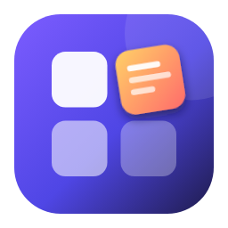

Tables, kanban, gallery, calendar and rich pages on top of your Google Sheets. Your Sheet stays the source of truth.
Download for Windows or macOSView on GitHubFree · No Kuadro account or server · Works with any Google Sheet
Kuadro reads and writes your Google Sheet directly from your computer and adds the views and tools a plain spreadsheet doesn't have.
Table, kanban, gallery, calendar and dashboard, all live on the same data.
Keyboard navigation, copy and paste of blocks, undo and redo, resizable and reorderable columns, bulk editing.
Write scripts and notes in a visual editor with headings, to-dos, callouts, toggles, tables and images.
See your title and thumbnail as they'd appear on YouTube and compare variants side by side.
Roles with per-column permissions, assignments, threaded comments with @mentions, presence and an inbox.
When / If / Then rules, like setting the publish date when a video is marked Published.
A global shortcut opens a tiny window to save an idea from anywhere, even with Kuadro minimized.
Rows are tracked by ID, edits are batched, conflicts are detected and simultaneous page edits are merged.
Dark and light themes, custom background colors or images, and English or Spanish.
There's no Kuadro server. The app connects your computer straight to Google, and your data stays in your own Sheets and Drive.
Read the privacy policy